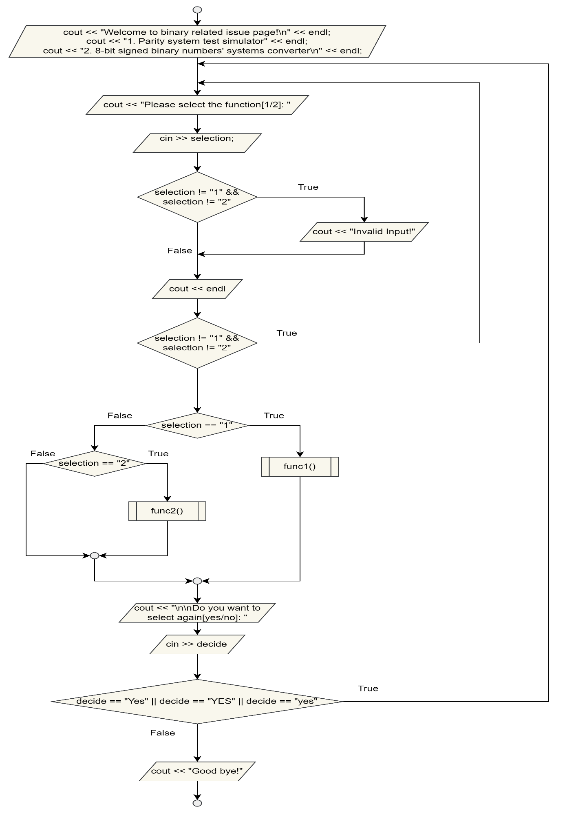
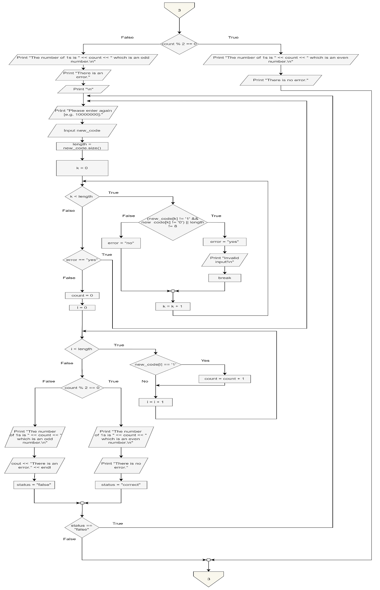
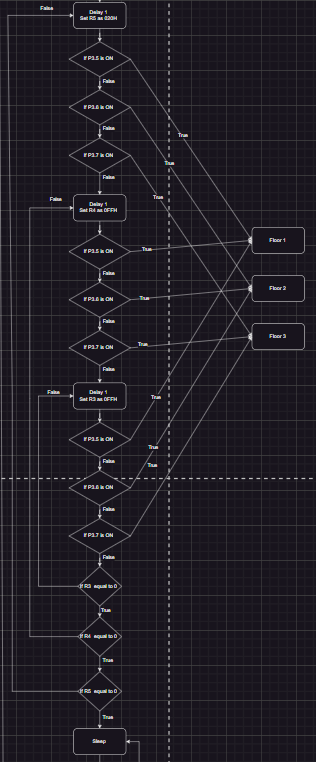
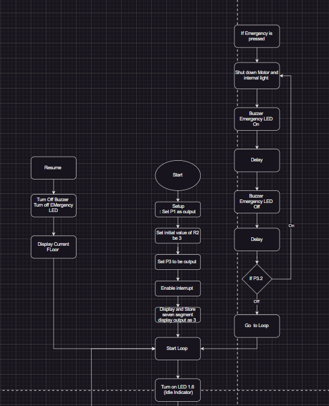
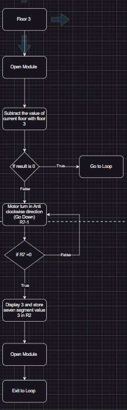
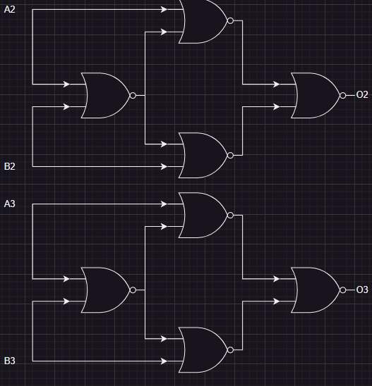
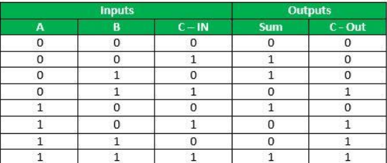
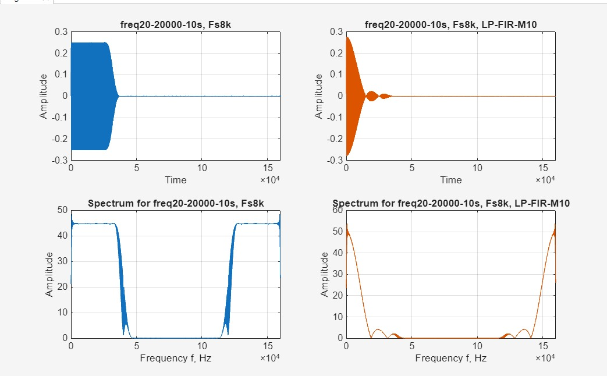
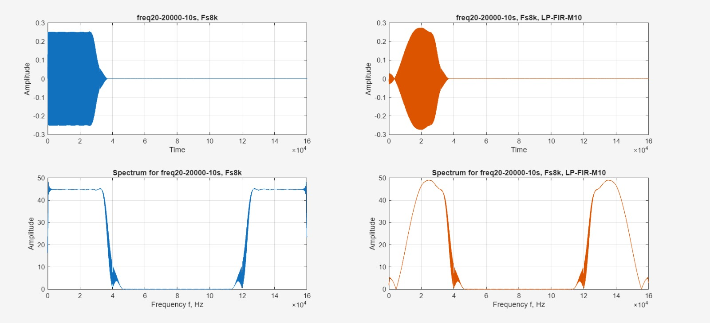

Digital electronic toolkit
The toolkit handles base and ASCII conversion, parity checks and truth tables, together with logic-device outputs and signed-binary values.
Academic engineering
My coursework started with programming and digital logic in Year 1, the later years then moved into embedded control, digital hardware and signal processing.
Years
Year 1 · programming and logic
For the programming assignment I built a console toolkit that handles binary operations and parity checking, it also converts signed 8-bit numbers.


The toolkit handles base and ASCII conversion, parity checks and truth tables, together with logic-device outputs and signed-binary values.
The truth-table rules of each Boolean gate are translated into program logic.
The submitted flow diagrams record how input is validated and how a function is selected, along with the repeat-control paths.
Year 2 · microcontrollers and control
The three-floor elevator project handles floor calls and direction control, the same controller also drives the display, emergency handling and door coordination.

Microcontroller assignment
The elevator is modelled on an 8051. Calls and floor indication are handled by the microcontroller, an L293D sets the motor direction when an emergency interrupt and a buzzer cover the emergency case. The design also includes reactivation, idle power saving and coordination with the door controller.


The work includes a state table and K-map, a D flip-flop module, a clock divider and the Quartus schematic.
Microcontroller routines process the calls and set the motor direction, the same routines also handle alarms and floor indication.
Each state transition is checked against both the hardware and the software evidence.
Year 3 · ASIC and digital hardware
The ASIC work starts from Boolean construction and ends with an 8-bit arithmetic design.

ASIC assignment
The design is written in gate-level Verilog. It consists of an 8-bit ripple adder, a NOR-only XNOR block and the overflow or carry indication, and each block is checked with its testbench evidence.

Op-amp summing, inverter and comparator stages set two switching thresholds near the setpoint, hence the output will not toggle repeatedly when the input hovers near it.
Laboratory and design work on CMOS device behaviour and on how logic is implemented with it.
Control concepts were studied together with practical circuit construction, and the response of each circuit was then interpreted.
Year 4 · DSP, embedded systems and integration
In the DSP laboratory the original signal is compared with the FIR-filtered output, in both the time domain and the frequency domain. In the same year I built the Smart Helmet dashboard and started my final-year EEG-BCI project.


FIR filters are designed and their response is analysed with time-domain and frequency-domain graphs.
A Python dashboard reads the ESP32 serial data. It shows the environmental values, inertial data and impact alerts, together with the connection state.
P300 decoding with vision-guided target selection, the selected target is then prepared for the robotic arm. Open the FYP page.